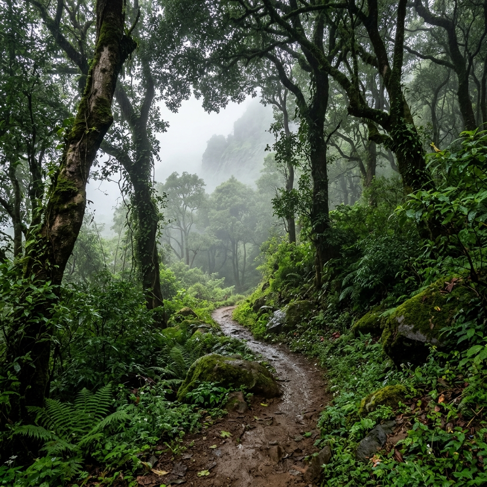
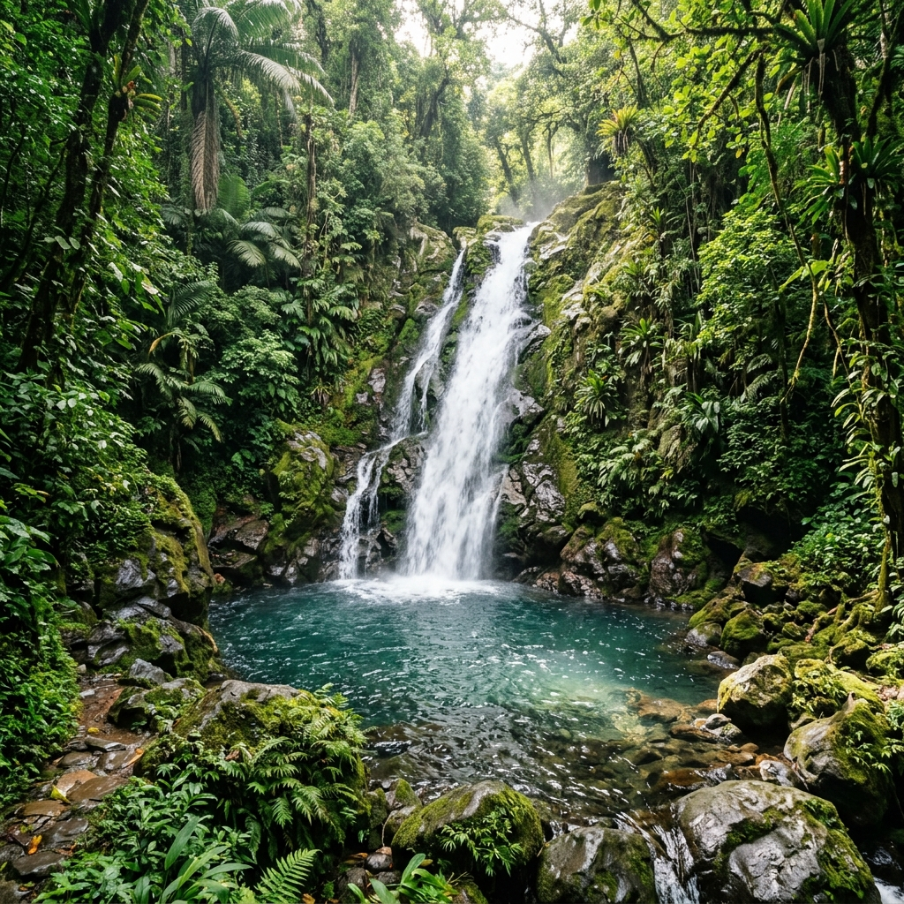
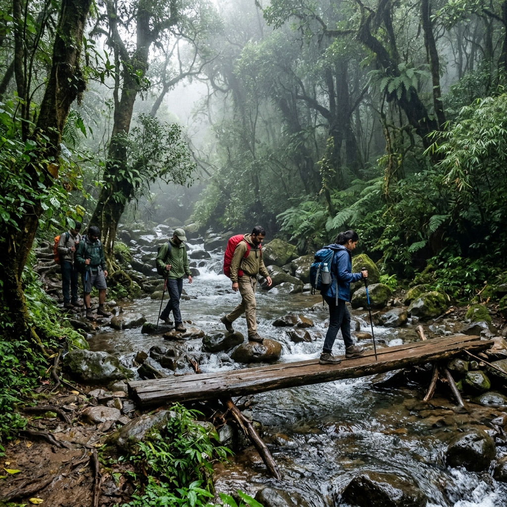
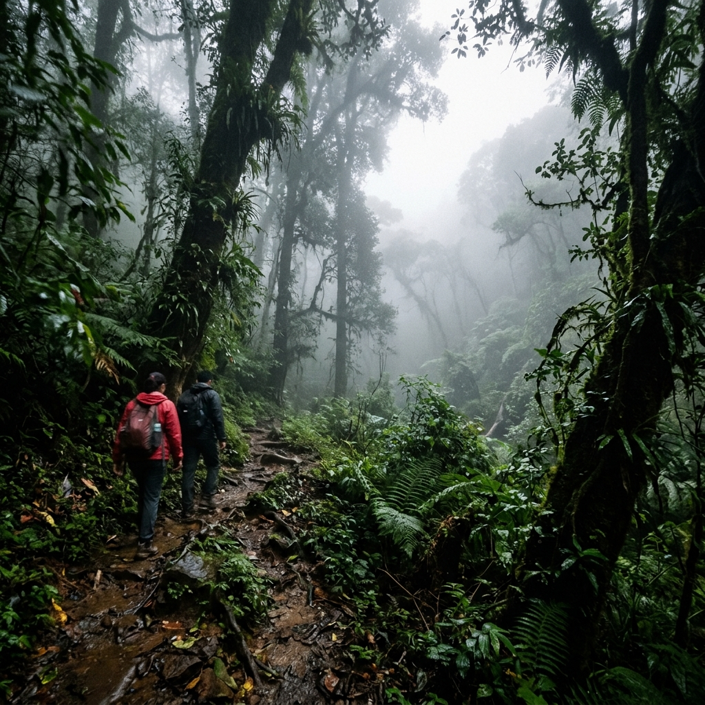

About Trek
Adrai Jungle Trek is one of the most beautiful and offbeat jungle treks in Maharashtra, located near Malshej Ghat. It is famous for dense forests, waterfalls, misty trails, and scenic landscapes.
The trek passes through villages, streams, and thick greenery, making it a perfect adventure for beginners and nature lovers. It offers a rare chance to explore pristine, untouched wilderness in the Sahyadris.
Region
Malshej Ghat
Access
Khireshwar

Major Attractions
Explore the dense wilderness and scenic spots of Malshej Ghat.




Travel Guide
Comprehensive routes to reach the fort from Mumbai.
Option 1: Rail & Road Route
Board a local train from Mumbai (Central Line) to Kalyan Station. From Kalyan, take a local state transport (ST) bus to Murbad. From Murbad, local shared jeeps or buses connect to the Khireshwar base village.
Cost: ₹150 – ₹300 ApproxOption 2: Bus Routes
Take a direct state transport bus from Kalyan or Mumbai bound for Malshej Ghat, get down near the Khireshwar junction, and travel to the base village.
Cost: ₹200 – ₹450 ApproxOption 3: Direct Drive
A scenic ~130 km road trip via the Kalyan – Murbad – Malshej Ghat road. Motorable road is available till the Khireshwar base village with parking facilities.
Essential Information
Everything you need to know for a smooth adventure.
Stay & Food
No food is available on the trek route itself. Basic local meals and homestays can be arranged at the Khireshwar base village.
Essentials
Carry 3 liters of water, strong trekking shoes, a raincoat, extra clothes, insect repellent, a torch, and a basic first aid kit.
Best Time
June to September (Monsoon) is best for active waterfalls and lush greenery. October to February (Winter) offers pleasant, mist-filled cooler hiking weather.
Location & Coordinates
Khireshwar Village, Malshej Ghat Region, Maharashtra, India